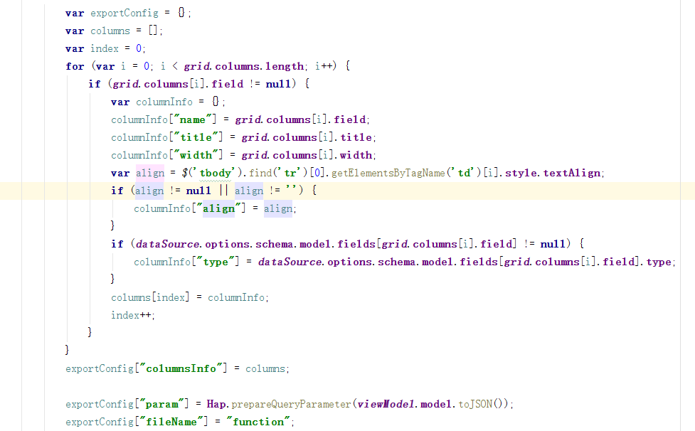
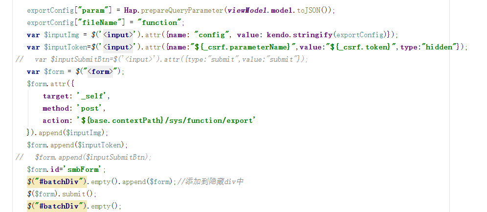
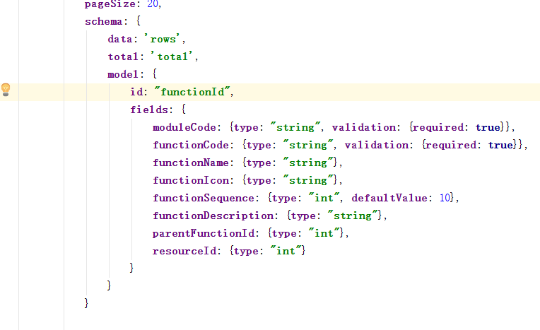
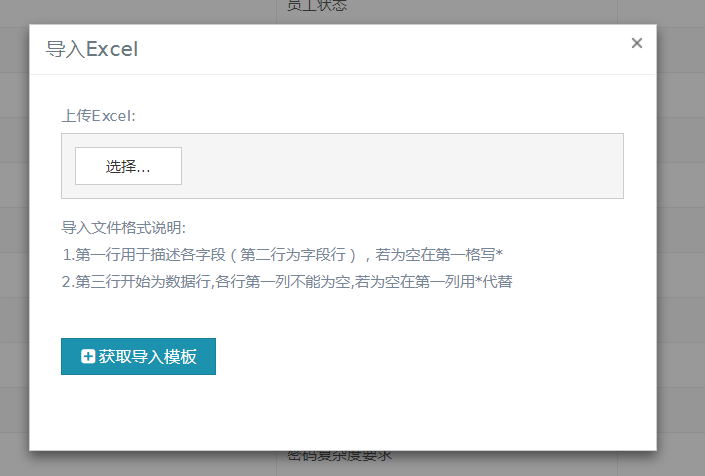
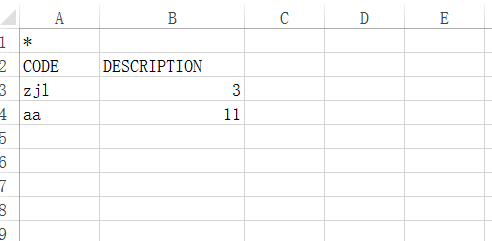

EXCEL导入导出
简介：
hap使用poi技术进行对excel的导入导出操作，Apache POI是Apache软件基金会的开放源码函式库，POI提供API给Java程序对Microsoft Office格式档案读和写的功能。
功能简介：
excel导出：
支持指定特定列的导出。
支持导出内容条件过滤。
自动检索页面样式，导出excel样式与页面样式相同。
支持分sheet导出ExportServiceImpl.rowMaxNum为sheet页最大行数，默认值为100000。
Excel导入：
使用poi解析xml方式进行导入，只支持单表导入。
数据库批量导入默认batch为100.
支持多sheet导入，sheet1从第三行开始读取数据，其他sheet页从第一行导入数据。
使用说明：
Excel通用导出（不支持IE 11以下版本）：
在按钮中添加如下属性添加excel导出功能
data-bind="click:exportExcel"
示例如下：
<span class="btn btn-primary " style="float:left;margin-right:5px;" data-bind="click:exportExcel"><i class="fa fa-file-excel-o" style="margin-right:3px;"></i><@spring.message "hap.exportexcel"/></span>
Excel导出（大数据量）：
当导出数据量过大时可使用如下方式导出excel。
1.构建ExportConfig类型，此类型用于存储excel导出所需基本信息，type为构造ExportConfig所需泛型，如需要导出Function所映射的数据库表，则修改第三个参数为Function.class。
2.exprotAndDownloadExcel方法为实际导出excel方法，所需三个参数sqlid（所执行的sqlMapper），exportConfig(包含excel所需信息），requestContext（封装当前httpservletrequest）。
3.在前台页面构建ExportConfig类。
获取页面gird中的相关参数columns（名称，标题，宽度，样式等） param（内容过滤规则） filename（文件命名）。（可根据自身需求构造需要导出的列）

构建post表单请求。

4.通过html页面中gird构造导出列属性，在fields属性里定义非String型的列整型为int，小数为number，日期为date型。

新版Excel导出：
新excel导出提供如下功能：
1.提供关联表字段导出
2.提供多语言字段导出
3.提供选择列导出
使用方法以Code表为例：
在dto中添加如下字段来声明子表
@Children @Transient private List<CodeValue> codeValues;在子表中使用ExcelJoinColumn注解声明关联关系
@ExcelJoinColumn(JoinTable = Code.class,JoinColumn = Code.FIELD_CODE_ID,AlternateColumn = Code.FIELD_CODE) private Long codeId;在查询服务下添加ExcelExport注解
@RequestMapping(value = "/code/query") @ExcelExport(table = Code.class)在页面中添加按钮如下
<span class="btn btn-primary " style="float:left;margin-right:5px;" onclick='Hap.exportExcel("sys_code_b","${base.contextPath}/sys/code/query")'><i class="fa fa-file-excel-o" style="margin-right:3px;"></i><@spring.message "hap.exportexcel"/></span>
excel导入：
1.框架提供如下函数实现excel导入功能。
Hap.importExcel(tableName)
示例 如下：
<span class="btn btn-primary k-grid-excel" style="float:left;" onclick='Hap.importExcel("sys_code_b")' ><i class="fa fa-arrow-circle-up" style="margin-right:3px;"></i><@spring.message "excel.import"/></span>

点击导入按钮之后弹出界面，可通过获取导入模板查看excel导入文件格式。

2.Excel所需格式：
第一行为title 为列信息，（若为空写*）
第二行为name（必填），规定所需插入列，对应数据中列名，插入前与数据库中列名比对，需被数据库列包含。（自增字段不写）
第一列不能为空

（sys_code_b表导入数据Excel定义示例)
新版excel导入：
- 支持关联表导入
- 支持多语言导入
使用方法： 1.同新版excel导出添加@Children和@ExcelExport注解 2.在页面添加按钮使用导入功能
<span class="btn btn-primary k-grid-excel" style="float:left;" onclick='Hap.importExcel("sys_code_b")' ><i class="fa fa-arrow-circle-up" style="margin-right:3px;"></i><@spring.message "excel.import"/></span>